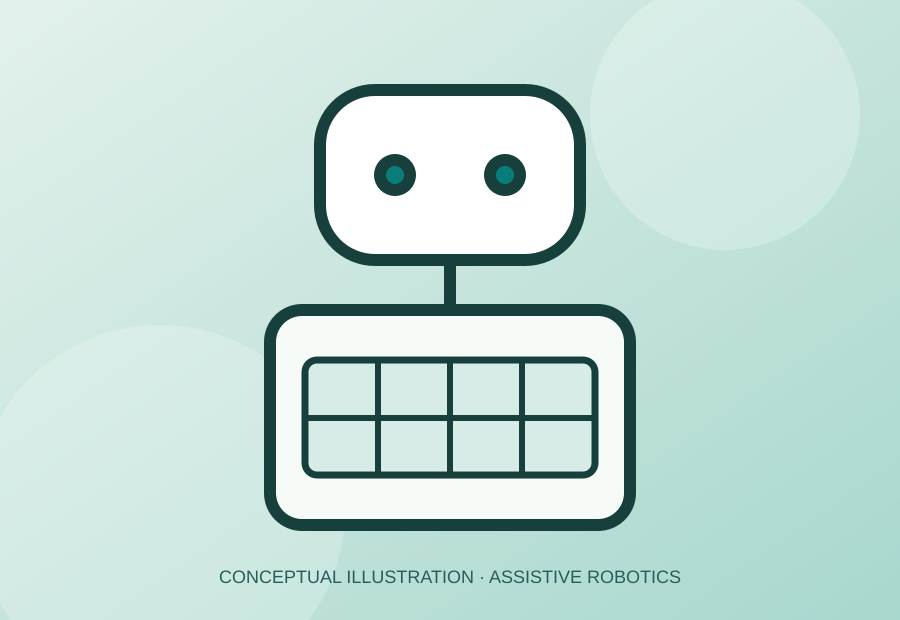

THE CHALLENGE
Medication organization
Explore how an engineered system might reduce the effort involved in sorting and organizing pills.
Exploring how thoughtful engineering can make medication organization more accessible for older adults.
Explore the project ↗
Conceptual illustration — not a photograph of the completed prototype.
Managing multiple medications can be complicated, especially for older adults. This project explored an assistive robot concept that could support pill organization and make a routine task easier to navigate.
Explore how an engineered system might reduce the effort involved in sorting and organizing pills.
Consider usability and accessibility alongside physical design and programmed behavior.
Apply CAD, hands-on prototyping, and programming to develop and present an assistive robotics project.
The Engineering Design Lab brought together design thinking and technical skills to investigate a practical challenge.
CAD modeling, physical prototyping, programming, engineering design, and project presentation.
Frame medication organization as an accessibility and everyday-living design challenge.
Consider how a robot and sorting mechanism could work together to organize pills.
Use CAD and hands-on building to translate ideas into a physical engineering project.
Apply coding and iterative problem-solving to the robot's intended behavior.
Communicate the project, process, and intended user benefit.
Spaces reserved for real project materials, including CAD screenshots, prototype photographs, and testing or presentation images.
These are placeholders, not actual project photos or test results.
This project connected technical design with a meaningful human need: creating tools that could help people navigate everyday tasks more independently.
Engineering choices matter when they address the needs of the people a product is meant to serve.
CAD, prototyping, and code offer different ways to develop an idea.
Connect technical decisions to the problem they are intended to solve.